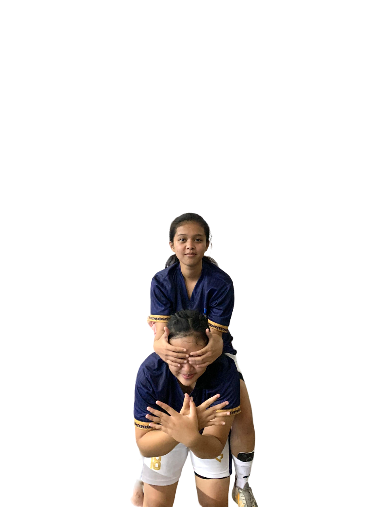
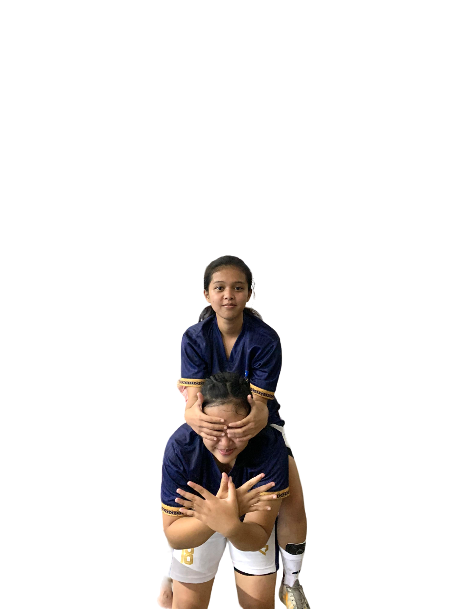

Hai ! Perkenalkan nama saya Diana Putri.
Asal sekolah saya di SMK Negeri 1 Garut.
Saya memiliki hobi berolahraga salah satu nya adalah olaraga futsal.
Futsal adalah salah satu hobi saya dan ingin selalu bermain futsal sampai kapan pun.
Walaupun itu bukanlah prioritas utama kehidupan saya.
Sejak kecil saya suka dengan olahraga futsal.
Karena semua keluarga saya di rumah menyukai permainan bola/futsal.